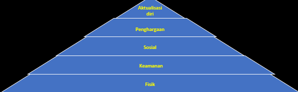

Motivasi dan Kepemimpinan
Peran Motivasi dan Kepemimpinan
Motivasi berperan penting dalam membangkitkan dorongan internal individu untuk mencapai tujuan organisasi atau pribadi, melalui pengakuan, penghargaan, dan penciptaan lingkungan kerja yang mendukung. Di sisi lain, kepemimpinan memainkan peran kunci dalam mengarahkan, menginspirasi, dan mempengaruhi perilaku karyawan melalui komunikasi yang efektif, pengambilan keputusan yang bijaksana, serta memberikan contoh dan visi yang jelas bagi tim dan organisasi secara keseluruhan.
Pengertian Dasar Motivasi
Motivasi: Suatu dorongan kehendak yang menyebabkan seseorang melakukan suatu perbuatan untuk mencapai tujuan tertentu.
Jenis Motivasi
1. Motivasi Intrinsic: berasal dari dalam individu tanpa adanya dorongan dari luar.
2. Motivasi Ektrinsik: berasal dari luar misalnya pemberian hadiah dan faktor-faktor eksternal lainnya yang memiliki daya dorong motivasional.
Perspektif Kebutuhan

Fisik ,Kebutuhan utama/dasar seperti makan, minum, dan pakaian.
Keamanan, Kebutuhan proteksi dari ancaman/gangguan dari luar seperti jaminan kerja dan jaminan hari tua.
Social, Kebutuhan menjadi bagian dari kelompok, mencintai & dicintai orang lain, serta bersahabat.
Pengakuan, Keinginan manusia untuk dihormati dan dihargai orang lain sesuai dengan kemampuan yang dimiliki dan ingin punya status.
Aktualisasi Diri, Kebutuhan untuk tumbuh dan berkembang sehingga membutuhkan penyaluran kemampuan dan potensi diri dalam bentuh nyata. Artinya setiap orang ingin tumbuh, membangun pribadi dan mencapai hasilnya.
3 Komponen Utama dalam Perspektif Pengharapan
• Pengharapan terhadap hasil yang akan diperoleh (outcome perfomance expectancy)
• Dorongan terhadap motivasi (valence)
• Pengharapan akan usaha yang perlu dilakukan (effort-performance expectancy)
Sumber
-
PPT Pertemuan 13.